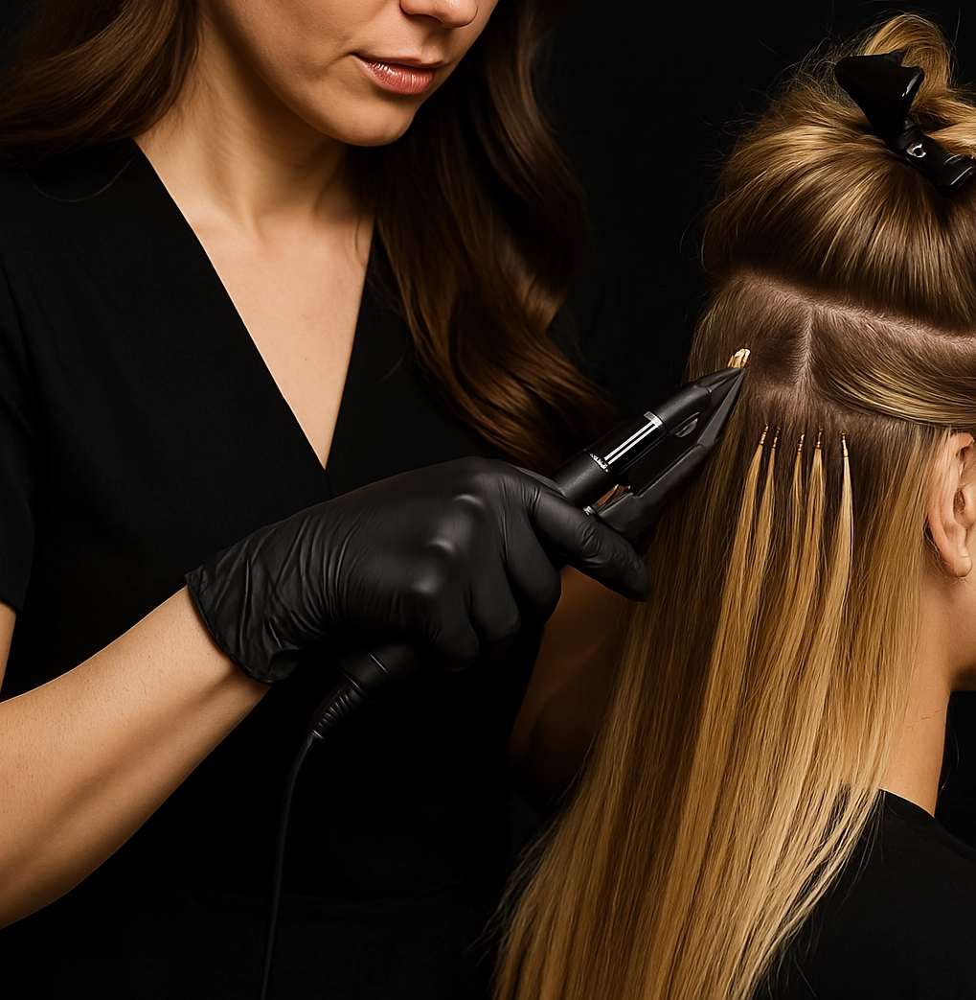

Коррекция нарощенных волос — обязательная процедура для поддержания идеального объема и аккуратного вида. Используются щадящие методы, которые не повреждают натуральные волосы, но возвращают прическе безупречную форму. Работаем с качественными материалами премиум-класса.
Стоимость:
- Коррекция (длина до __ см): 000 ₽
- Коррекция (длина от __до__ см): 000 ₽
- Премиум-пряди (100% натуральные волосы): от 000 ₽
Акция: При записи онлайн — скидка 10% на работу мастера!
Почему нужна коррекция?
- Сохраняет плотность и равномерность наращивания.
- Устраняет отросшие участки у корней.
- Предотвращает спутывание волос
- Продлевает срок носки нарощенных прядей до 3–4 месяцев.